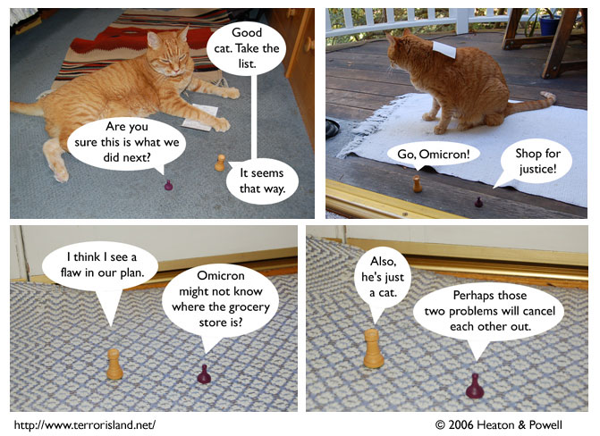
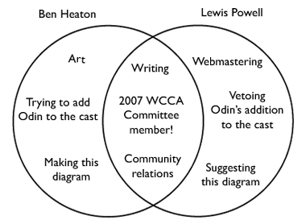

Strip #33
— Monday, August 28, 2006
Sid means he should shop in the cause of justice, not that justice is something he should buy.
Notes, Thoughts, &c.
Ben’s Notes
You can’t see it in the strip, but that piece of paper has many types of food written on it. They include: bacon, flour, baking soda, grape leaves, yogurt, trout, bagels, watermelon, pomegranate juice, caraway glaze, milk, grapes, ham, bananas, cheese, turkey, tortellini, oranges (non-clockwork), other cheese, lettuce, root beer, rice, olive oil, soup, potato chips, paprika, bread, and ketchup.
Lewis’s Notes
Sometimes people (actual people, not fictional ones like Ben talks about in his notes), ask us who does what on the comic. So, I came up with an idea which Ben executed, namely the creation of a diagram of our responsibilities.
Here it is:
